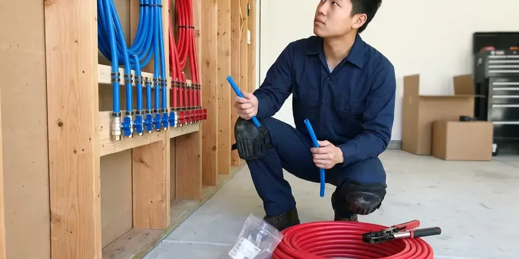

Slab Leak Detection in Lakeville, MN
Our slab leak techs in Lakeville, MN use pressure tests, acoustic gear and thermal scans together to find leaks fast.
- Thermal Floor Scans
- Detection Fee Quoted First
- Isolation of Hot and Cold Sides
- Acoustic Slab Locating
Book Slab Leak Detection in Lakeville, MN
You find out if it really is a slab leak and exactly where it sits.
Locating Leaks Under Concrete in Lakeville, MN
CNV Plumbing locates leaks in water lines buried under concrete slabs in Lakeville, MN. Most start as a pinhole. Left alone, that pinhole wets the soil under the foundation for months, with the repair getting bigger every week it keeps running.
Some of what we do:
- Tracer gas for quiet PEX leaks
- Attic and wall reroute planning
- Pinpointing leaks to a few inches

Additional Plumbing Maintenance Services in Lakeville, MN
Our maintenance and specialty plumbing services in Lakeville, MN protect your home year-round and extend the life of every system.


Customers
Why Choose CNV Plumbing for Slab Leak Detection in Lakeville, MN?
Thousands of gallons, cracked tile, warped wood floors and soft soil under the foundation are what one slab leak can cost. Accurate locating is step one. Then the fix can be a single small hole or an overhead reroute instead of a gutted floor.
- Cross-Checked Marks, Two methods confirm the spot before we mark the floor.
- Water Bills, Hundreds of gallons a day can leak from one small pinhole, and the bill shows it.
- Home Value, Buyers' inspectors often flag slab leaks, so fixing it protects your sale price.
Citywide Coverage
Our slab leak techs work in every part of Lakeville, from older ranch homes with soft copper under the floor to newer builds on post-tension slabs. Every truck carries a full kit. Appointments are usually available within a day, sometimes the same afternoon if the floor is hot.
Experienced Team
Our team knows the slab leak patterns found in Minnesota homes, like hot lines failing near the water heater and copper wearing at bends. That speeds things up. They test the most likely line first.
Safety-First Approach
Post-tension slabs contain steel cables under high tension that must never be cut, so we locate those cables before any concrete work begins. We never skip that. All repairs meet the plumbing code your city or county has adopted.
Trusted Certified Lakeville Plumbing Services Professionals
At CNV Plumbing, we take pride in licensed, certified plumbing services throughout Lakeville, MN. Credentials matter in this trade. Every repair, install and maintenance visit follows strict safety and quality rules, and the plumbers doing the work carry recognized industry credentials.
Call Us Now PHCC Plumbing Contractor Recognition
PHCC Plumbing Contractor Recognition Better Business Bureau (BBB) Accreditation
Better Business Bureau (BBB) Accreditation Angi Certified Pro
Angi Certified Pro ISO 9001 Quality Management Certification
ISO 9001 Quality Management CertificationSlab Leak Detection and Repair in Lakeville, MN
Supply and Drain Leaks Under the Slab in Lakeville, MN
Supply leaks and drain leaks act differently. Supply leaks are pressurized, so they move the meter, warm the floor on the hot side and run whether or not anyone uses water. Drain leaks only leak when water goes down, showing up as smells, sluggish drains or wet spots near bathrooms. We test both kinds in your Lakeville, MN home.

Slab Leak Reroutes in Lakeville
Rerouting leaves the failed pipe in the slab. New pipe runs through the walls or attic instead, which avoids breaking concrete and often costs less than opening a finished floor. We usually use PEX because it handles heat and resists corrosion. Tile and hardwood floors make this the favorite.
Pressure Testing and Isolation in Lakeville
Pressure isolation is always the first step. Our tech closes the main, caps or valves off the hot and cold sides, and puts a gauge on each, then watches which one drops over fifteen to thirty minutes. That tells us where to look. It also rules out a toilet or faucet leak masquerading as a slab leak in your Lakeville, MN home.
Urgent Slab Leak Calls in Lakeville, MN
A slab leak that is soaking carpet or pushing water up through tile cannot wait until next week. Close the main first. CNV Plumbing sends a tech to Lakeville, MN homes quickly, isolating the leak so you have water elsewhere while we plan the repair.
Cold Water Slab Leak Detection in Lakeville, MN
Cold-side leaks leave no warm spot. They are harder to see. They usually show up as a running meter, damp carpet, a musty smell or water seeping at baseboards, so we isolate the cold side, map the pipe with a line tracer and listen along the route with a ground microphone.
Post-Tension Slab Leak Detection in Lakeville
Many newer homes sit on post-tension slabs. These slabs have steel tendons stretched under tens of thousands of pounds of force, and cutting one by mistake is dangerous and can damage the foundation. We scan for tendons with ground-penetrating radar or a rebar locator before opening anything, or suggest a reroute that skips the slab.
Slab Leaks in Commercial Buildings in Lakeville
Commercial slabs are thicker and carry larger pipe, so leaks can move more water and be harder to hear from the surface with a standard ground microphone. We adjust our methods. Our techs combine zone isolation, line tracing and tracer gas, and schedule testing around your operating hours in Lakeville.

Emergency Slab Leak Response in Lakeville
Water flooding a hallway or seeping through grout needs fast attention. Shut the main. We respond quickly, isolate the leak and usually get water back to the rest of the home that day, then come back to locate and repair the line properly.
Local Slab Leak Detection in Lakeville, MN
A fast answer on a suspected slab leak limits damage to floors and soil, since a pinhole leaking a quart an hour puts more than 150 gallons a month under the foundation. Most appointments happen within a day in Lakeville. Recent bills help.
Our techs test slab homes all over Lakeville, MN, and know which builders ran copper under the floor and which ones sleeved PEX through it. Knowing that cuts the search time on many visits.
CNV Plumbing at a Glance
- Licensed and insured plumbers serving Lakeville, MN
- Same-day appointments and 24/7 emergency response
- Clear written estimates, no hidden fees
- 4.8-star rated by 501+ Minnesota customers
Lakeville Map
Lakeville Information
- Population
- 76,243
- Area codes
- 612/507/320
- Service area
- Lakeville and towns within a 40 mile drive
- Nearby
- Apple Valley, Burnsville, Eagan, Bloomington
Water leaking under a slab soaks the soil the foundation sits on, and wet soil can swell, settle or wash out, which turns a small leak into a bigger problem in Lakeville, MN. Basements are the norm, so drain tile, sump pumps and foundation drainage are central to keeping homes dry.
Talk to a Plumber
Call CNV Plumbing for honest, reliable plumbing from people who know the trade in Lakeville, MN.
Our Specialized Plumbing Services in Lakeville, MN
At CNV Plumbing, we handle the full list of plumbing services across Lakeville, MN. We go from leak detection all the way to full system installations, for homes and commercial buildings, and we do it quickly at a fair price. Explore our core services below:


How We Locate a Slab Leak in Lakeville, MN
We confirm the leak before we ever suggest opening the floor.
Book a Visit
Call (612) 712-9569 to describe the problem. We set an appointment and quote the detection fee.
Meter and Pressure Tests
We confirm water loss at the meter and isolates each side of the system with gauges.
Pinpoint the Leak
Ground microphones and thermal scans find the spot, confirmed by a second method.
Frequently Asked Questions About Slab Leak Detection in Lakeville
Expect $250 to $700 for slab leak detection in Lakeville. Tougher leaks cost more. The fee covers pressure isolation, line tracing, acoustic and thermal work, plus tracer gas if the line is plastic and too quiet to hear through the concrete.
Left alone, a slab leak can crack the foundation, wash out soil, grow mold under flooring and in wall cavities, and ruin tile or hardwood. Humidity climbs too. Eventually it can cause settling that costs far more than the plumbing.
We stand behind our marks. A wrong mark is on us. Repairs come with a written warranty on parts and labor, listed on the invoice from CNV Plumbing.
Yes. We back repairs with a written parts and labor warranty. Uponor and similar PEX brands carry long manufacturer warranties, frequently 25 years with matched fittings.
Coverage depends on your policy. Plenty cover sudden water damage and the cost to reach the leak, though the pipe itself is often excluded and long-running leaks may be denied. Check with your insurer.
Most visits take one to four hours. Multiple leaks take longer. We spend the extra time confirming with a second tool so the floor only gets opened once.
Our kit includes acoustic ground microphones, FLIR thermal cameras, line tracers, pressure gauges and tracer gas sniffers for plastic pipe. Every tool answers a different question. Using two on the same spot is how we confirm the mark before any cutting.
Not accurately. You can notice the signs, but pinpointing a leak under concrete without equipment usually ends with holes in the wrong spot. Professional locating costs less than a wrong guess.
Hear From Customers Who Hired Our Plumbing Experts

James P.
Our restaurant had a slow leak at the hand sink that was rotting the cabinet base. CNV Plumbing came in at six in the morning before prep, replaced the trap and both supply lines, and was packed up before my first cook clocked in.
Commercial Plumbing · Burnsville, MN
Diane F.
My kitchen faucet had dripped for months and I finally got tired of hearing it at night. CNV Plumbing came out the next morning, replaced the cartridge and the O rings, and tightened a loose base that was letting water under the sink.
Faucet Repair · Burnsville, MNRobert G.
The camera showed a full break in our clay sewer line near the street. CNV Plumbing replaced it with a trenchless pipe burst, so the only digging was two small pits in the yard. They let us watch the footage before and after.
Sewer Line Replacement · Edina, MNMarcus H.
Grease from the fryer line kept clogging the kitchen drain at my diner. CNV Plumbing hydro jetted the line after closing, showed me the buildup on camera, and set us up on a quarterly cleaning so it does not catch us on a Friday again.
Drain Cleaning · Bloomington, MN
Daniel K.
A pipe burst in the garage ceiling at 11 at night. Someone answered on the second ring, and the plumber was in my driveway about fifty minutes later. He shut off the main, cut out the split section, and had water back on before 2 am.
Emergency Plumbing · Burnsville, MNKaren W.
After our third pinhole leak in copper, we stopped patching. CNV Plumbing gave us a written plan room by room and repiped the house in PEX while we stayed in it. The crew covered our floors every morning and cleaned up every night.
Repiping · Eden Prairie, MN